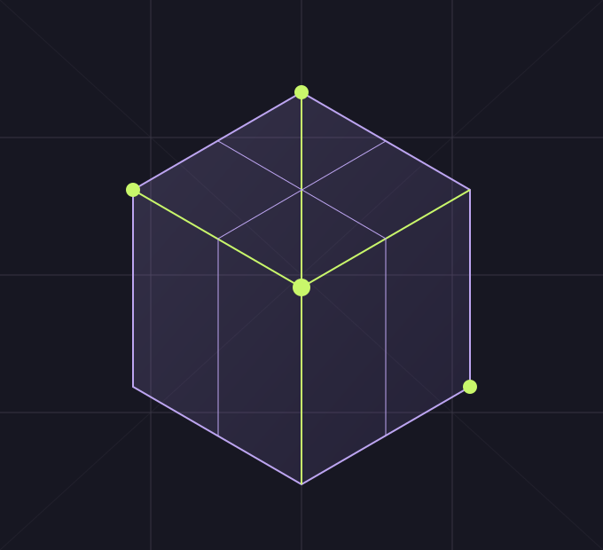

12
Editable profiles
A structured starting point across three network categories.
NETWORK RESEARCH / A CLEARER VIEW
A low fee is only part of the story. Bring costs, settlement time and operational dependencies into one research workspace.
No wallet connection. Research starts with assumptions you can inspect.

01 / OPEN THE PROFILE
Choose a reference profile, operation count and fee units.
Adjust the fee, token value and batching assumption separately.
Save a named scenario with its inputs and a clear research note.
03 / YOUR RESEARCH, TOGETHER
Save the profiles you want to revisit, record what needs checking and compare the assumptions side by side. Keep the detail that a price chart leaves out.
Build your research watchlist12
A structured starting point across three network categories.
03
What does it cost, when does it settle and what does it rely on?
Hashfen provides general research tools and information, not financial advice. Planning figures are editable assumptions, not current network quotes. Digital assets and network services involve risk.